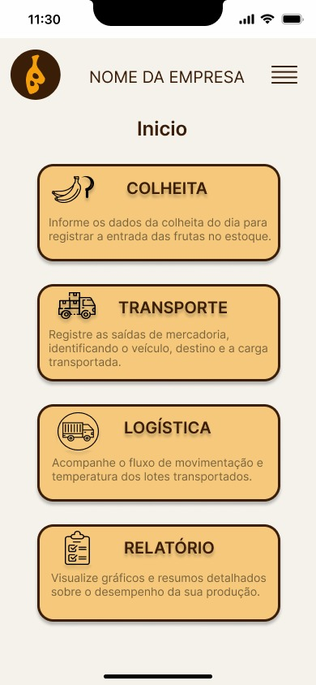
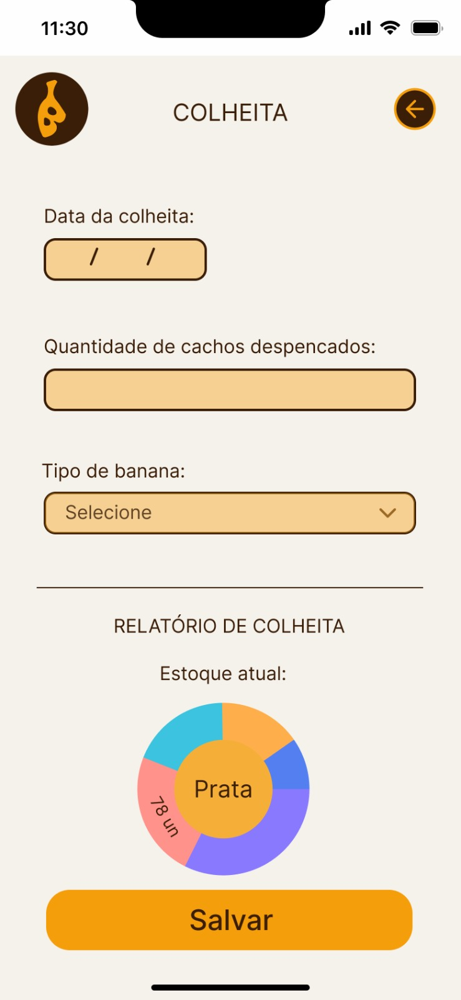

Uma nova forma de cuidar da logística da banana
O BANUX é um projeto que busca facilitar a rotina da produção de bananas, conectando o cultivo, o transporte e a distribuição em um só lugar.
Conheça o projeto
Sobre o BANUX
O BANUX foi pensado para ajudar no acompanhamento da produção, no controle do estoque e no transporte das bananas. A proposta é reunir essas informações para tornar o trabalho mais simples e organizado.
Resultados do projeto
Conheça algumas das telas desenvolvidas para o BANUX.

Início
Acompanhe as informações da empresa.

Colheita
Consulte os dados do estoque de bananas.

Transporte
Acompanhe o transporte das cargas.

Entregas
Visualize as entregas e seus status.

Relatórios
Consulte informações da produção.
Fale conosco
Quer saber mais sobre o nosso projeto?
Entre em contato